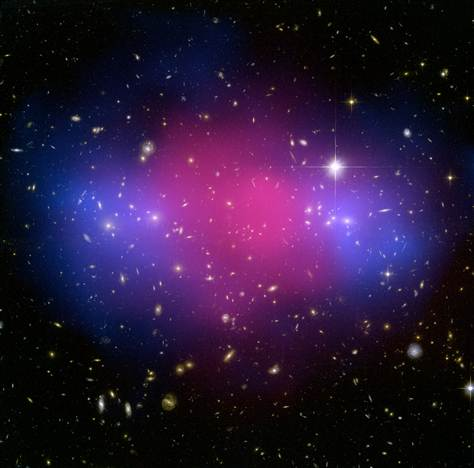

Dark matter is a hypothetical type of matter composing the approximately 27% of the mass and energy in the observable universe that is not accounted for by dark energy, baryonic matter, and neutrinos. The name refers to the fact that it does not emit or interact with electromagnetic radiation, such as light, and is thus invisible to the entire electromagnetic spectrum. Although dark matter cannot be directly observed with conventional electromagnetic telescopes, its existence and properties are inferred from its various gravitational effects such as the motions of visible matter, via gravitational lensing, its influence on the universe's large-scale structure, and its effects in the cosmic microwave background. Dark matter is transparent to electromagnetic radiation and/or is so dense and small that it fails to absorb or emit enough radiation to be detectable with current imaging technology.
